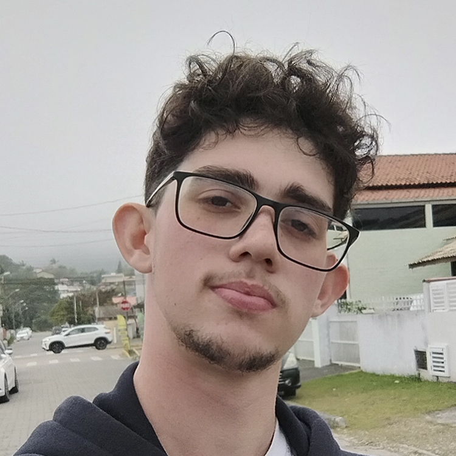

Engenharia de Redes
________________________________________
Brasília-DF
Email: bernardolimabsb@gmail.com
Telefone: (61) 99204-6348
Github: github.com/Ursoforte07
Linkedin: linkedin.com/in/bernardoaslima
Estudante de Engenharia de Redes (UnB) buscando estágio em redes, infraestrutura ou suporte técnico, com interesse em programação e desenvolvimento de soluções tecnológicas.
Engenharia de Redes de Comunicação - 4º semestre (previsão de conclusão: 2030)
Formação completa em Língua Inglesa - Concluído em 2024
2026 Março - Agosto (Contrato de 6 meses)
Apoio em atividades administrativas, tradução e demandas relacionadas à tecnologia.
2026 Outubro - (em andamento)
Treinamento para entrar na EngNet Consultoria.